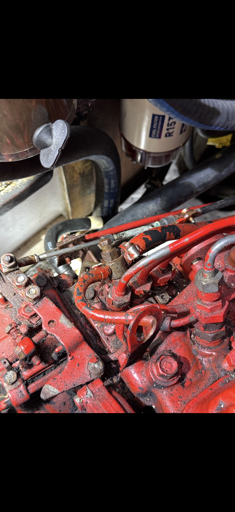

036868 Return Hose ★
037163 Clamp
Racor R15T
Inj. Pump
HP Lines
Coolant Hoses
Throttle
Clamp 011405
Where the hoses, nuts & washers live
Every flexible line on this engine is held by clamps. Every major casting is held by metric studs, nuts, flat washers, and lockwashers. Below is the hardware map from Pub #037115.
Fuel system hoses & clamps (Pub #037115)
- 036868 Injector return (leak-off) hose to pump — focus part (listed NLA online — confirm supersession)
- 037163 Keystone clamps ×2 on 036868
- 034857 / 037187 Additional fuel return hoses
- 038047 Lift pump → fuel filter hose
- 036865 Filter → injection pump hose
- 030025 Fuel hose (supply side)
- 036951 / 036952 High-pressure injector lines (20B)
- 024906 Mini / general hose clamps (fuel)
Fuel banjo washers & bolts
- 037105 Banjo washer ×2 (return stack)
- 030289 Banjo washer M8 · 030291 Banjo washer M14
- 037104 Banjo washer (bleed stack)
- 037110 Bleed bolt · 037111 Banjo bolt · 016988 Banjo bolt M8
- 036921 Injector nuts · 036922 Injector leak-off gaskets
Cooling system hoses (20B example)
- 037157 Sea pump → heat exchanger
- 037383 Thermostat → manifold
- 037506 Fresh-water pump → heat exchanger
- 036654 Flow-controller return bend (¾″)
- 036556 Flow-control hose ×2
- 045041 / 045042 Hose kits (20B / 30B)
Clamps used on cooling / exhaust
- 011386 Hose clamp size 12 (common on smaller lines)
- 011405 Hose clamp size 16 (thermostat, manifold, exchanger)
- 021878 Hose clamp size 20 (larger cooling lines)
Nuts, washers, studs (metric)
- 015830 Stud M8×25 — exhaust manifold to head (×4 typical)
- 018242 Nut M8 DIN 934 — manifold nuts
- 031787 Washer M8 DIN 125 (flat)
- 031786 Lockwasher M8 DIN 127
- 031784 Washer M6 DIN 125 · 031783 Lockwasher M6
- 018804 Capscrew M6×20 — pumps, covers, small brackets
- 031789 Washer M10 · 019262 Lockwasher M10 · 015887 Nut M10
- 037162 Banjo washer M16 (thermostat / cooling fittings)
- 036493 Banjo washer — sump drain (×2)
Oil / sump hose hardware
- 033691 Sump drain hose (or 033056 alternate length)
- 036819 Banjo bolt — sump drain
- 024922 Bracket for sump drain hose
- 024905 Cap for sump drain hose
Transmission cooler hoses
- 037154 Hose, transmission sea water ×2
- 011405 Clamps ×4 on those lines
Fuel system flow (with return hardware)
① Tank → Primary filter / water separator (Racor R15T aftermarket on this boat)
② Lift pump → Secondary filter assembly 030210 (element 030200)
③ Injection pump 037102 (20B) / 037103 (30B)
④ HP lines 036951/52/53 → injectors 037091
⑤ Injector leak-off → hose 036868 → pump / tank
⑥ Clamped with Keystone 037163 ×2 — inspect for cuts from overtightening
Official manuals